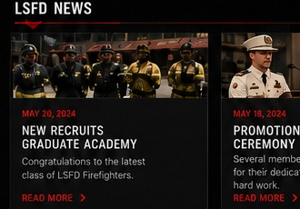
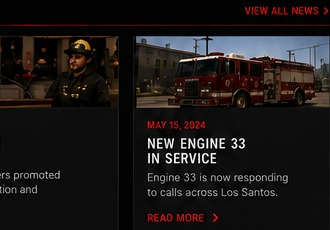
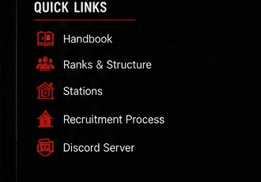

✦
FIRE & RESCUE
Extinción de incendios, rescate técnico, materiales peligrosos y atención de incidentes.
CONOCER MÁS ›LOS SANTOS • SAN ANDREAS
Al servicio de los ciudadanos de Los Santos con valor, disciplina y profesionalismo.
SOBRE EL LSFD
El Los Santos Fire Department es una institución dedicada a proteger la vida, la propiedad y el entorno de nuestra ciudad mediante respuesta a emergencias, prevención, educación y servicios médicos.
En el servidor, nuestros miembros representan los valores de disciplina, compañerismo, respeto y excelente interpretación de rol.
VER EL DEPARTAMENTO ›NUESTRAS ÁREAS
Extinción de incendios, rescate técnico, materiales peligrosos y atención de incidentes.
CONOCER MÁS ›Atención prehospitalaria, estabilización, RCP, traslado y asistencia médica de emergencia.
CONOCER MÁS ›Inspecciones, educación ciudadana, seguridad contra incendios y prevención de riesgos.
CONOCER MÁS ›Formación de nuevos reclutas, prácticas, evaluaciones y desarrollo profesional.
CONOCER MÁS ›ACADEMIA LSFD
Valor. Honor. Compromiso. Tu carrera dentro del LSFD comienza aquí.
INICIAR POSTULACIÓN ›FORMACIÓN OFICIAL
Consulta el manual académico, protocolos de actuación, primeros auxilios, procedimientos y reglamentos internos.
RECLUTAMIENTO
Si tienes disciplina, compromiso y ganas de hacer un buen rol, te estamos buscando.
ACTUALIDAD

29 AGO, 2026La academia abre sus puertas a nuevos aspirantes del departamento.
LEER MÁS ›
26 AGO, 2026Reconocemos la dedicación y el trabajo de nuestros miembros.
LEER MÁS ›
22 AGO, 2026Una nueva unidad se incorpora a la respuesta de emergencias.
LEER MÁS ›